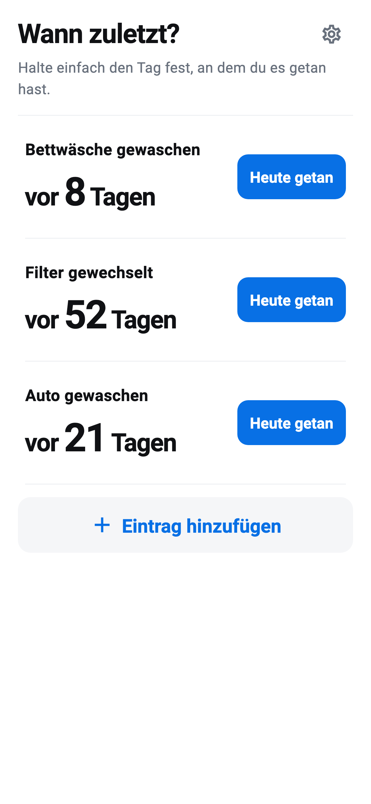

Benennen
Füge eine Reinigung, einen Austausch oder eine Pflegeaufgabe nur mit einem Namen hinzu.
Wann zuletzt? · iOS / Android
Halte Reinigung, Austausch und Pflege fest. Sieh die vergangenen Tage.
Für iPhone, iPad und Android erhältlich
So funktioniert es
SO FUNKTIONIERT ES
Füge eine Reinigung, einen Austausch oder eine Pflegeaufgabe nur mit einem Namen hinzu.
„Heute getan“ speichert sofort. Ein Versehen kannst du direkt rückgängig machen.
Auf der Startseite siehst du die Tage. Im Eintrag findest du Verlauf und Durchschnitt.
NUR DAS WICHTIGE
Keine Erinnerungen oder empfohlenen Rhythmen. Durchschnitte beruhen auf deinen eigenen Daten.
Einträge und Verlauf bleiben auf deinem Gerät. Aufzeichnen funktioniert offline; Werbung benötigt Internet.
OS-Backups können App-Daten enthalten; die Wiederherstellung ist nicht garantiert.
Datenschutzerklärung lesen →